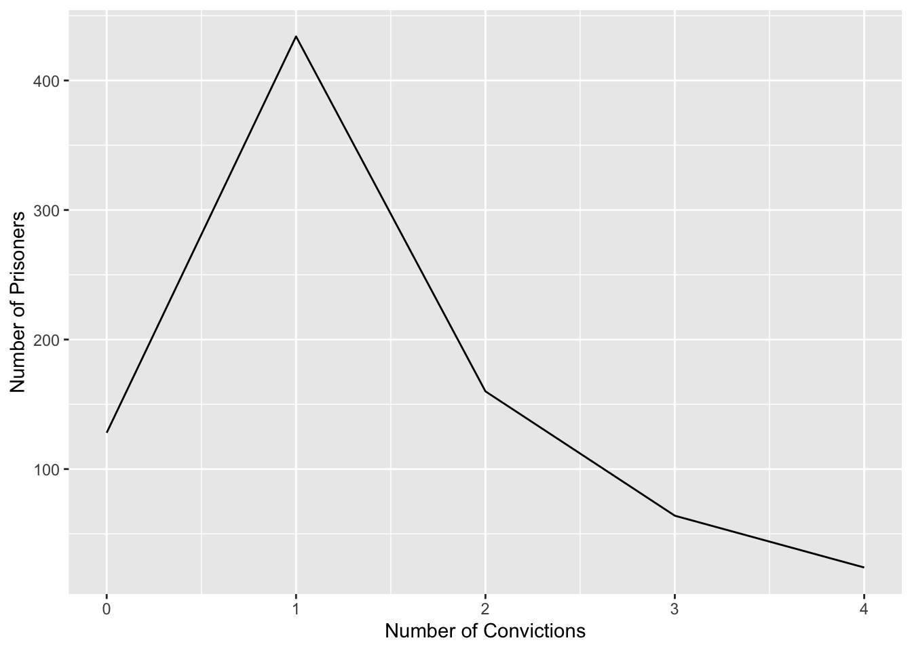

knitr::opts_chunk$set(echo = TRUE, warning = FALSE, message = FALSE)Homework 1
hw1
Question 1
1 (a)
Reading in the data:
# load packages.
library(readxl)
library(tidyverse)
library(lsr)
# read in data.
df <- read_excel("_data/LungCapData.xls")Distribution of LungCap:
hist(df$LungCap)
The histogram suggests that the distribution is close to a normal distribution. Most of the observations are close to the mean. Very few observations are close to the margins (0 and 15).
1 (b)
The boxplots below show the probability distributions grouped by gender.
boxplot(LungCap~Gender, data = df)
Males appear to have a slightly greater lung capacity than females.
1 (c)
# check class of Smoke.
class(df$Smoke)[1] "character"# convert Smoke to factor type.
df$Smoke <- as.factor(df$Smoke)
# mean lung capacity for smokers.
df %>% select(Smoke, LungCap) %>% group_by(Smoke) %>% summarise(mean(LungCap))It does not make sense, as I did not expect smokers to have greater mean lung capacities than non-smokers.
1 (d)
# check class of Age.
class(df$Age)[1] "numeric"# convert Age to categorical variable.
df <- mutate(df, AgeGroup = case_when(Age <= 13 ~ "13 and below", Age == 14 | Age == 15 ~ "14 to 15", Age == 16 | Age == 17 ~ "16 to 17", Age >= 18 ~ "18 and above"))
# construct histogram.
ggplot(df, aes(x = LungCap)) +
geom_histogram() +
facet_grid(AgeGroup~Smoke)Most people seem to be non-smokers, and non-smokers seem to have greater lung capacity.
1 (e)
# check class of AgeGroup.
class(df$AgeGroup)[1] "character"# convert AgeGroup to factor.
df$AgeGroup <- as.factor(df$AgeGroup)
# construct table.
df %>% select(Smoke, LungCap, AgeGroup) %>% group_by(AgeGroup, Smoke) %>% summarise(mean(LungCap))Non-smokers have greater mean lung capacity for ages 14-15, 16-17 and 18 and above. Smokers have greater mean lung capacity for age 13 and below, which is different from 1(d). There might be some extreme outliers affecting the results for those age 13 and below.
1 (f)
# correlation.
cor(df$LungCap,df$Age)[1] 0.8196749# covariance.
cov(df$LungCap,df$Age)[1] 8.738289The value of 0.82 for correlation indicates a strong positive relationship between lung capacity and age - as age increases, lung capacity increases. The covariance is a little harder to interpret - the positive value reflects a positive relationship between lung capacity and age, but it is hard to assess the strength of the relationship, given that covariance ranges from negative infinity to infinity. I would prefer to use correlation in most cases.
Question 2
Adding table and visualization for reference:
# construct table.
X <- c(0, 1, 2, 3, 4)
Freq <- c(128, 434, 160, 64, 24)
table <- data.frame(X, Freq)
# generate line graph.
ggplot(table, aes(x = X, y = Freq)) + geom_line() + labs(x = "Number of Convictions", y = "Number of Prisoners")
The most common number of prior convictions among these 810 prisoners is 1.
2 (a)
a <- 160/810The probability that a randomly selected inmate has exactly 2 prior convictions is 0.1975309.
2 (b)
b <- (128+434)/810The probability that a randomly selected inmate has fewer than 2 prior convictions is 0.6938272.
2 (c)
c <- (128+434+160)/810The probability that a randomly selected inmate has 2 or fewer prior convictions is 0.891358.
2 (d)
d <- (64+24)/810The probability that a randomly selected inmate has more than 2 prior convictions is 0.108642.
2 (e)
# multiply each value of X by its probability and add the products.
e <- (0*(128/810)) + (1*(434/810)) + (2*(160/810)) + (3*(64/810)) + (4*(24/810))The expected value for the number of prior convictions is 1.2864198. To be more precise, since number of prior convictions should not have decimal places, we can round this down to 1, which is what the line graph showed us as well.
2 (f)
# calculate required formula for each value of X.
f1_0 <- ((0-e)^2) * (128/810)
f1_1 <- ((1-e)^2) * (434/810)
f1_2 <- ((2-e)^2) * (160/810)
f1_3 <- ((3-e)^2) * (64/810)
f1_4 <- ((4-e)^2) * (24/810)
# sum up the above for variance.
f1 <- f1_0 + f1_1 + f1_2 + f1_3 + f1_4
# square root for SD.
f2 <- sqrt(f1)For prior convictions, the variance is 0.8562353 and the standard deviation is 0.9253298. In general, I think it might be more meaningful to calculate mode and proportions when generating descriptive statistics for number of prior convictions.
References
https://openstax.org/books/statistics/pages/4-2-mean-or-expected-value-and-standard-deviation